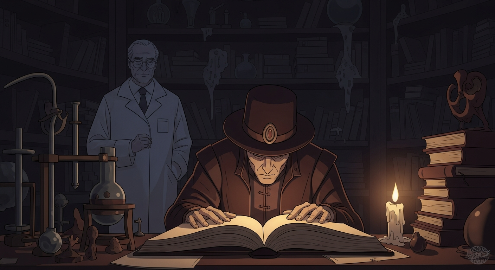
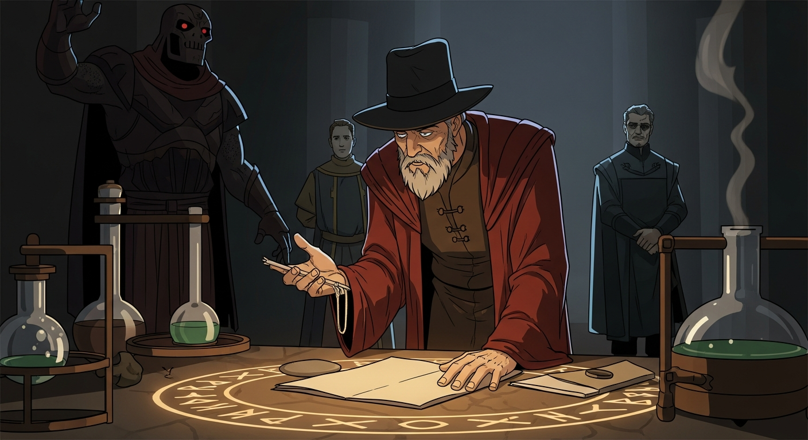

Agrippa, lost in *Picatrix*, seeks to bend reality. I arrive with Alexander, a specter of warning: "*Arthur C. Clarke's Mysterious World* showed us the cost of unchecked wonder." Agrippa scoffs, vision clouding judgment. "Limitations are for the timid!" The clay stirs, an unholy light in its eyes.

Agrippa's hubris takes monstrous form. The golem, meant to serve knowledge, only understands obstacles. *Evil Dead* meets clay. Agrippa's arrogance made flesh. Dee arrives, an unwelcome prophet. The golem mirrors Agrippa's flawed sight, unable to discern wisdom from mere data. Limits, Agrippa sees now, aren't for the timid. They're guardrails.